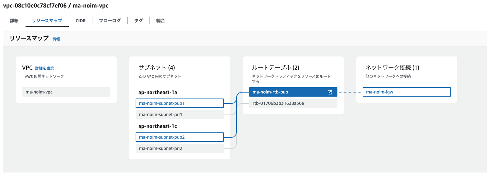
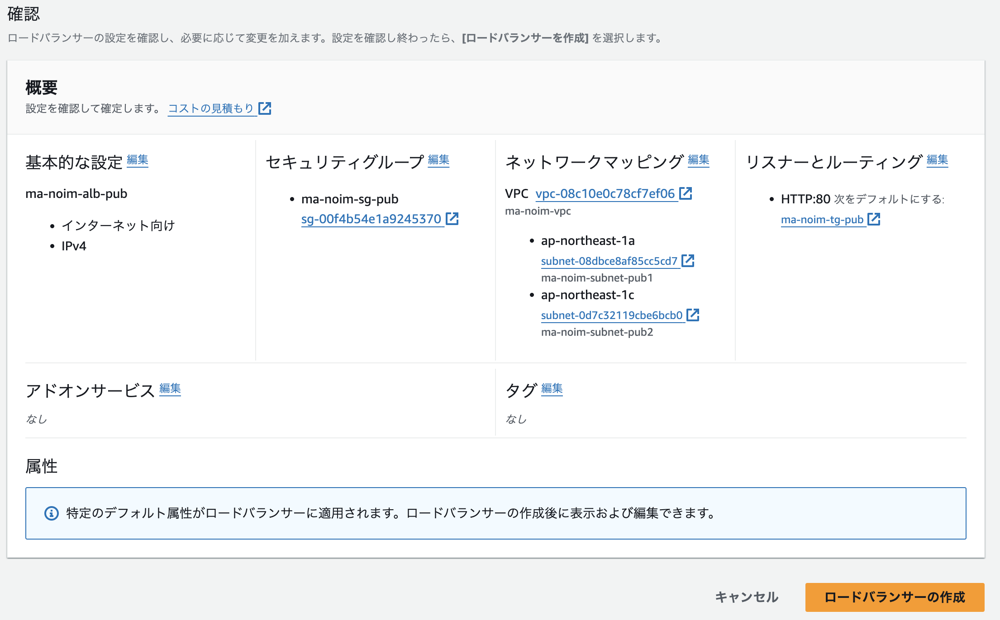
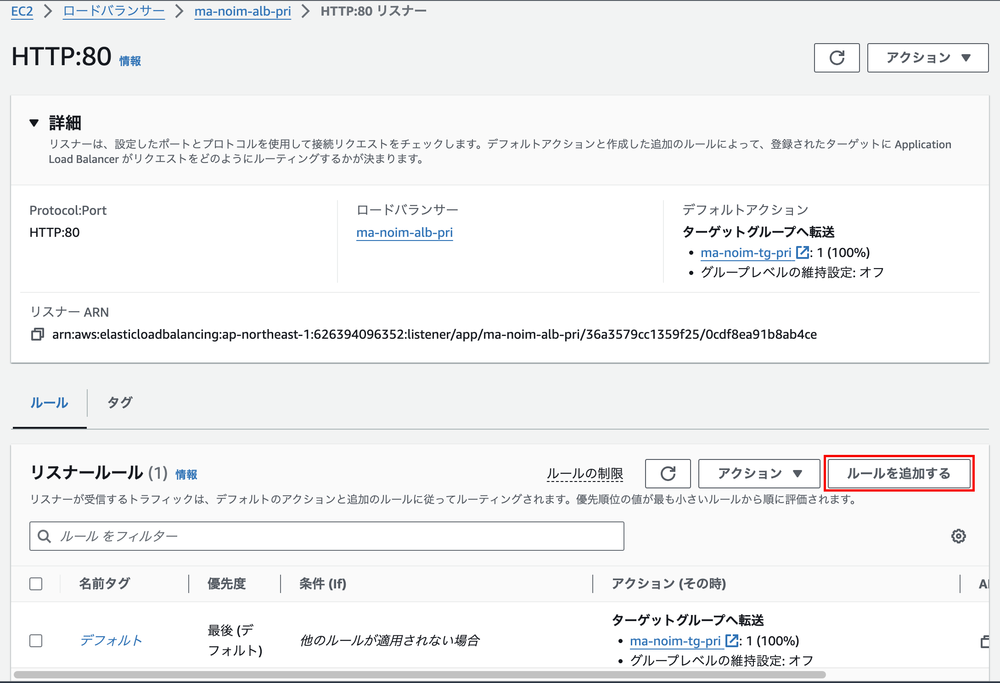
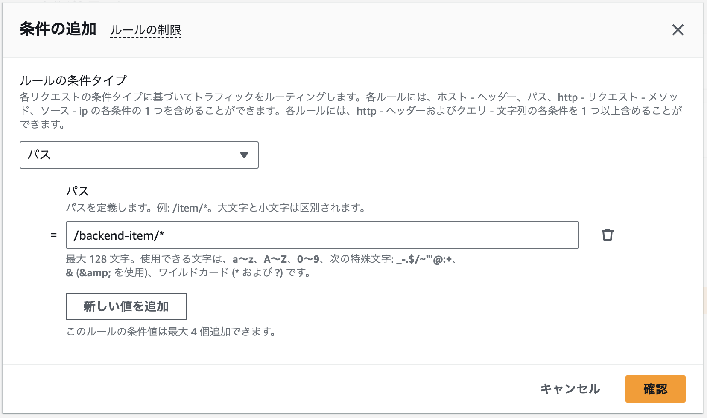
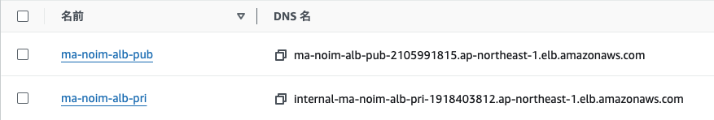

マイクロサービス作成② （AWS環境の構築）
実施すること
作成したSpringBootアプリケーションを含めたコンテナをAWS上で動作させる。
アーキテクチャは以下のように作成する。

作成の流れ
VPC作成
ALB作成
コンテナのDockerHubへのプッシュ
ECSクラスタ作成
ECSタスク定義
ECSサービス実行
1. VPC作成
作成するVPCのリソースマップは以下 
1-1. VPC作成 [VPC > お使いのVPC > VPC を作成]
作成するリソース：VPCのみ
名前タグ：ma-noim-vpc
IPv4 CIDR：10.2.76.0/24
設定できたら「VPCを作成」
1-2. サブネット作成
[VPC > サブネット > サブネットを作成]
VPC ID：ma-noim-vpc その他の設定は以下のように4つのサブネットに分割する
| サブネット名 | アベイラビリティーゾーン | IPv4 subnet CIDR block |
|---|---|---|
| ma-noim-subnet-pub1 | ap-northeast-1a | 10.2.76.0/26 |
| ma-noim-subnet-pub2 | ap-northeast-1c | 10.2.76.64/26 |
| ma-noim-subnet-pri1 | ap-northeast-1a | 10.2.76.128/26 |
| ma-noim-subnet-pri2 | ap-northeast-1c | 10.2.76.192/26 |
1-3. ルートテーブル作成
[VPC > ルートテーブル > ルートテーブルを作成]
ここまで作成したサブネットはデフォルトのルートテーブルに接続されている。
デフォルトのルートテーブルはNATゲートウェイのルーティングが有効化されているプライベートサブネット向けであるため、インターネットからアクセス可能としたいパブリックサブネットは、インターネットゲーウェイのルーティングが有効化されているカスタムルートテーブルに紐づける必要がある。
まずは、カスタムルートテーブルを作成する。
名前：ma-noim-rtb-pub
VPC：ma-noim-vpc
カスタムルートテーブルをサブネットに紐づける。[VPC > ルートテーブル > rtb-ID > サブネットの関連付けを編集]
関連付け対象①：ma-noim-subnet-pub1
関連付け対象②：ma-noim-subnet-pub2
サブネット向けのルートテーブルは、デフォルトのものを利用する事とする。
1-4. インターネットゲートウェイ作成
[VPC > インターネットゲートウェイ > インターネットゲートウェイの作成]
カスタムルートテーブルのデフォルトゲートウェイにインターネットゲートウェイを紐づけるために、インターネットゲートウェイを作成する
名前：ma-noim-vpc-igw
作成したigwをVPCにアタッチする[VPC > インターネットゲートウェイ > VPC にアタッチ (インターネットゲートウェイID)]
使用可能なVPC：ma-noim-vpc
1-5. カスタムルートテーブルにルートを追加
[VPC > ルートテーブル > rtb-ID > ルートを編集]
igwの作成ができたら、ルートテーブルの設定を開き、ルートを追加する
送信先：0.0.0.0/0
ターゲット：ma-noim-vpc-igwのインターネットゲートウェイID
2. ALB作成
インターネットからフロントエンドへのアクセスだけでなく、フロントエンドからバックエンドへのアクセスもHTTPを利用した構成であるため、ロードバランサにはアプリケーションロードバランサ（ALB）を利用する。また、パブリックサブネットへのアクセスとプライベートサブネットへのアクセスはアクセス元を制御する（プライベートサブネットへはインターネットからの通信を遮断）必要があるので、publicとprivateはそれぞれ別のALBを用意して、セキュリティグループにてアクセス制御を実施する。
2-1. セキュリティグループ作成
[EC2 > セキュリティグループ > セキュリティグループを作成]
それぞれのALBに適用するセキュリティグループ（通信制御）を作成しておく
| パブリックサブネット | プライベートサブネット | |
|---|---|---|
| セキュリティグループ名 | ma-noim-sg-pub | ma-noim-sg-pri |
| 説明（任意） | Internet to public subnet | Internal VPC to private subnet |
| VPC | ma-noim-vpc | ma-noim-vpc |
| インバウンドルール（プロトコル） | HTTP/80 | HTTP/80 |
| インバウンドルール（送信元） | 0.0.0.0/0 | 10.2.76.0/24 |
| タグ（任意） | Name=ma-noim-sg-pub | Name=ma-noim-sg-pri |
パブリックALBには、全ての送信元からのHTTP通信のみを許可。プライベートALBには、VPC内の送信元からのみHTTP通信を許可。
2-2. ターゲットグループ
[EC2 > ターゲットグループ > ターゲットグループの作成]
ALBで負荷分散された後に転送先となるターゲットグループを作成する。
ECSで起動タイプでFargateを利用する場合はターゲットタイプは「IPアドレス」。起動タイプをインスタンスとするならば「インスタンス」。
| パブリックサブネット | プライベートサブネット | |
|---|---|---|
| ターゲットタイプ | IPアドレス | IPアドレス |
| ターゲットグループ名 | ma-noim-tg-pub | ma-noim-tg-backend-item |
| プロトコル/ポート | HTTP/80 | HTTP/80 |
| VPC | ma-noim-vpc | ma-noim-vpc |
| ヘルスチェク | /login.html | /backend-item/items |
ターゲットを登録する画面は、後にECSサービスを作成する時に指定するのでデフォルトのままで作成する。
2-3. ALB作成
[EC2 > ロードバランサー > ロードバランサータイプの比較と選択]
まずはALBを作成して、リスナー（どのポートで受け付けて、どこに転送するか）を設定する。
| パブリックサブネット | プライベートサブネット | |
|---|---|---|
| ロードバランサータイプ | Application Load Balancer | Application Load Balancer |
| ロードバランサー名 | ma-noim-alb-pub | ma-noim-alb-pri |
| スキーム | インターネット向け | 内部 |
| VPC | ma-noim-vpc | ma-noim-vpc |
| マッピング | ma-noim-subnet-pub1, ma-noim-subnet-pub2 | ma-noim-subnet-pri1, ma-noim-subnet-pri2 |
| セキュリティグループ | ma-noim-sg-pub | ma-noim-sg-pri |
| リスナー（プロトコル/ポート） | HTTP/80 | HTTP/80 |
| リスナー（転送先） | ma-noim-tg-pub | ma-noim-tg-backend-item |
| 後の設定はデフォルトのまま。 |
例として、パブリック向けALBの設定は以下のようになる。

2-4. パスベースのルーティング設定
[EC2 > ロードバランサー > ma-noim-tg-backend-item > HTTP:80 リスナー]
プライベートサブネットへの転送はパスベースルーティングを利用する。パスベースルーティングを利用することで、「/backend-item/を含むURLはターゲットグループAへ転送する。/backend-xxx/を含むURLはターゲットグループBへ転送する」といったことが可能となる。
パスベースルーティングの設定は作成したリスナーのルールで設定する。

[ルールを追加] Name：backend-item
[ルール条件の定義] ルールの条件タイプ：パス = /backend-item/*

[ルールアクションの定義] アクションの種類：ターゲットグループへ転送
[ルールアクションの定義] ターゲットグループ：ma-noim-tg-backend-item
[ルールの優先度] 優先度：1（デフォルトルールより優先されていればOK）
2-5. ALBのFQDNをアプリケーション構成情報に反映
作成できたALBに割り当てられたFQDNを確認する。 
つまり、以下のような経路で動作する事となる。 
フロントエンドからバックエンドを呼び出す時の構成情報を修正する。
service:
backendEndpoint: http://internal-ma-noim-alb-pri-1627874572.ap-northeast-1.elb.amazonaws.com
3. コンテナプッシュ
GitHubActionsを利用した自動ビルドを参照して、DockerHubへコンテナをアップロードする。次の手順ではECSにてDockerHubからコンテナをダウンロードしてECSタスクを定義する。
4. ECS作成
https://dev.classmethod.jp/articles/divide-clusters-in-aws-fargate/
4-1. ECSクラスタ作成
[Amazon Elastic Container Service > クラスターの作成]
| パブリックサブネット | プライベートサブネット | |
|---|---|---|
| クラスタ名 | ma-noim-ecs-cluster-frontend | ma-noim-ecs-cluster-backend-item |
| インフラストラクチャ | AWS Fargate | AWS Fargate |
クラスタ名：ma-noim-ecs-cluster-pub
インフラストラクチャ：AWS Fargate
5. ECSタスク定義
[Amazon Elastic Container Service > 新しいタスク定義の作成]
タスク定義ファミリー：ma-noim-ecs-task-frontend
起動タイプ：AWS Fargate
タスクロール：なし（AWSのサービスを利用する場合は適したIAMロールを作成して適用）
コンテナ 名前：frontend-webapp
コンテナ イメージ：noimasaki/frontend-webapp
コンテナ 必須コンテナ：はい
コンテナ コンテナポート：8080
コンテナ プロトコル：TCP
ログ収集：有効
タスク定義ファミリー：ma-noim-ecs-task-backend-item
起動タイプ：AWS Fargate
タスクロール：なし（AWSのサービスを利用する場合は適したIAMロールを作成して適用）
コンテナ 名前：backend-item
コンテナ イメージ：noimasaki/backend-item
コンテナ 必須コンテナ：はい
コンテナ コンテナポート：8080
コンテナ プロトコル：TCP
ログ収集：有効
6. ECSサービス定義
[Amazon Elastic Container Service > クラスター > 【クラスターID】 > サービスの作成]
アプリケーションタイプ：サービス
ファミリー：ma-noim-ecs-task-frontend
サービス名：ma-noim-ecs-service-frontend
VPC：ma-noim-vpc
サブネット：ma-noim-subnet-pub1, ma-noim-subnet-pub2
セキュリティグループ：ma-noim-sg-pub
パブリックIP：有効
ロードバランサー：ma-noim-alb-pub
ロードバランサー ヘルスチェックの猶予期間：60秒
リスナー：80:HTTP
ターゲットグループ：ma-noim-tg-pub